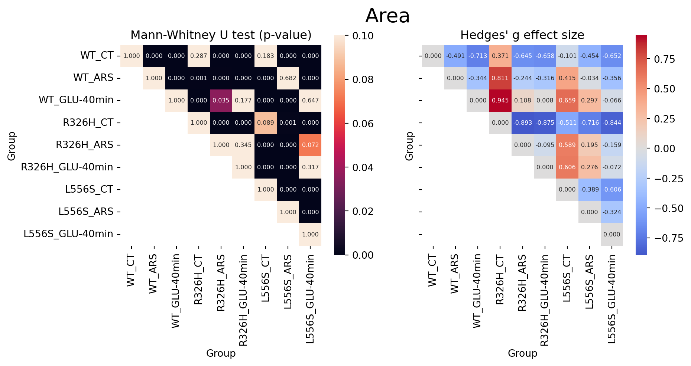
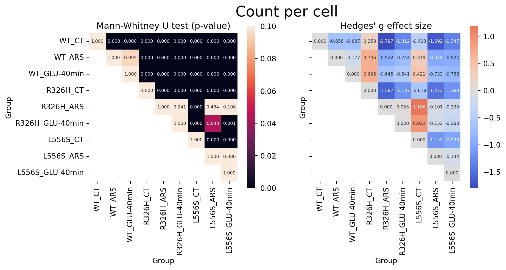
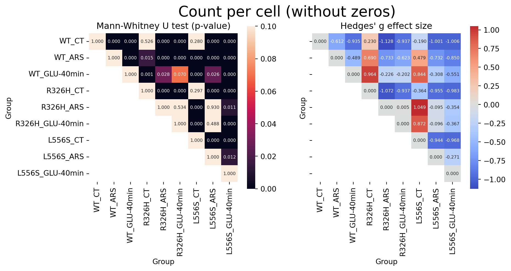

3 Statistical analyses
Statistical analyses were conducted using Python’s Pingouin library (version 5.5) to evaluate differences between groups. The Mann-Whitney U test was employed to compare group similarities with respect to stress granules area and the count of stress granules per cell, as this non-parametric test is appropriate for assessing differences between two independent groups without assuming normality of data distribution. Statistical significance was determined at a p-value threshold of 0.05, with results reported as median values and interquartile ranges to appropriately represent the distribution of non-normally distributed data (boxplots and violinplots).
3.1 Stress granule area
In this section we report the results of the Mann-Whitney U test for stress granule area.
The table below shows the results of the Mann-Whitney U test for stress granule area.
| a | b | pval | effsize | sig | |
|---|---|---|---|---|---|
| 0 | WT_CT | WT_CT | 1.000000e+00 | 0.000000 | |
| 1 | WT_CT | WT_ARS | 1.444819e-08 | -0.491300 | *** |
| 2 | WT_CT | WT_GLU-40min | 3.723332e-18 | -0.712830 | *** |
| 3 | WT_CT | R326H_CT | 2.869549e-01 | 0.370567 | |
| 4 | WT_CT | R326H_ARS | 4.694069e-13 | -0.645084 | *** |
| 5 | WT_CT | R326H_GLU-40min | 1.979906e-14 | -0.658083 | *** |
| 6 | WT_CT | L556S_CT | 1.833748e-01 | -0.100994 | |
| 7 | WT_CT | L556S_ARS | 2.489017e-08 | -0.454045 | *** |
| 8 | WT_CT | L556S_GLU-40min | 8.642237e-16 | -0.651920 | *** |
| 9 | WT_ARS | WT_ARS | 1.000000e+00 | 0.000000 | |
| 10 | WT_ARS | WT_GLU-40min | 1.518014e-09 | -0.344289 | *** |
| 11 | WT_ARS | R326H_CT | 7.476797e-04 | 0.811269 | *** |
| 12 | WT_ARS | R326H_ARS | 4.147449e-04 | -0.243542 | *** |
| 13 | WT_ARS | R326H_GLU-40min | 5.469063e-06 | -0.315777 | *** |
| 14 | WT_ARS | L556S_CT | 4.041335e-07 | 0.414520 | *** |
| 15 | WT_ARS | L556S_ARS | 6.819676e-01 | -0.034364 | |
| 16 | WT_ARS | L556S_GLU-40min | 3.026860e-08 | -0.355838 | *** |
| 17 | WT_GLU-40min | WT_GLU-40min | 1.000000e+00 | 0.000000 | |
| 18 | WT_GLU-40min | R326H_CT | 1.341227e-05 | 0.945012 | *** |
| 19 | WT_GLU-40min | R326H_ARS | 3.504465e-02 | 0.107662 | * |
| 20 | WT_GLU-40min | R326H_GLU-40min | 1.774624e-01 | 0.008097 | |
| 21 | WT_GLU-40min | L556S_CT | 3.408725e-19 | 0.659057 | *** |
| 22 | WT_GLU-40min | L556S_ARS | 1.747310e-11 | 0.297401 | *** |
| 23 | WT_GLU-40min | L556S_GLU-40min | 6.470862e-01 | -0.065804 | |
| 24 | R326H_CT | R326H_CT | 1.000000e+00 | 0.000000 | |
| 25 | R326H_CT | R326H_ARS | 1.447696e-04 | -0.892613 | *** |
| 26 | R326H_CT | R326H_GLU-40min | 1.190401e-04 | -0.875171 | *** |
| 27 | R326H_CT | L556S_CT | 8.852778e-02 | -0.511138 | |
| 28 | R326H_CT | L556S_ARS | 9.773745e-04 | -0.716146 | *** |
| 29 | R326H_CT | L556S_GLU-40min | 7.071967e-05 | -0.843682 | *** |
| 30 | R326H_ARS | R326H_ARS | 1.000000e+00 | 0.000000 | |
| 31 | R326H_ARS | R326H_GLU-40min | 3.447954e-01 | -0.094542 | |
| 32 | R326H_ARS | L556S_CT | 8.781866e-13 | 0.588608 | *** |
| 33 | R326H_ARS | L556S_ARS | 7.002608e-05 | 0.195383 | *** |
| 34 | R326H_ARS | L556S_GLU-40min | 7.151400e-02 | -0.158782 | |
| 35 | R326H_GLU-40min | R326H_GLU-40min | 1.000000e+00 | 0.000000 | |
| 36 | R326H_GLU-40min | L556S_CT | 1.662738e-14 | 0.606451 | *** |
| 37 | R326H_GLU-40min | L556S_ARS | 3.767650e-07 | 0.275572 | *** |
| 38 | R326H_GLU-40min | L556S_GLU-40min | 3.167485e-01 | -0.071998 | |
| 39 | L556S_CT | L556S_CT | 1.000000e+00 | 0.000000 | |
| 40 | L556S_CT | L556S_ARS | 9.733764e-07 | -0.389053 | *** |
| 41 | L556S_CT | L556S_GLU-40min | 1.224795e-16 | -0.605562 | *** |
| 42 | L556S_ARS | L556S_ARS | 1.000000e+00 | 0.000000 | |
| 43 | L556S_ARS | L556S_GLU-40min | 5.722174e-10 | -0.323537 | *** |
| 44 | L556S_GLU-40min | L556S_GLU-40min | 1.000000e+00 | 0.000000 |
3.2 Stress granule count
In this section we report the results of the Mann-Whitney U test for stress granule count.

The table below shows the results of the Mann-Whitney U test for stress granule count.
| a | b | pval | effsize | sig | |
|---|---|---|---|---|---|
| 0 | WT_CT | WT_CT | 1.000000e+00 | 0.000000 | |
| 1 | WT_CT | WT_ARS | 2.328439e-38 | -0.658002 | *** |
| 2 | WT_CT | WT_GLU-40min | 2.991894e-45 | -0.686770 | *** |
| 3 | WT_CT | R326H_CT | 5.077542e-06 | 0.257577 | *** |
| 4 | WT_CT | R326H_ARS | 1.071489e-95 | -1.797017 | *** |
| 5 | WT_CT | R326H_GLU-40min | 3.311004e-110 | -1.312007 | *** |
| 6 | WT_CT | L556S_CT | 9.752523e-13 | -0.423307 | *** |
| 7 | WT_CT | L556S_ARS | 2.390978e-108 | -1.691925 | *** |
| 8 | WT_CT | L556S_GLU-40min | 1.000682e-127 | -1.347347 | *** |
| 9 | WT_ARS | WT_ARS | 1.000000e+00 | 0.000000 | |
| 10 | WT_ARS | WT_GLU-40min | 9.478483e-02 | -0.176939 | |
| 11 | WT_ARS | R326H_CT | 4.024982e-37 | 0.705919 | *** |
| 12 | WT_ARS | R326H_ARS | 2.172558e-28 | -0.922284 | *** |
| 13 | WT_ARS | R326H_GLU-40min | 1.176457e-32 | -0.743579 | *** |
| 14 | WT_ARS | L556S_CT | 9.983112e-06 | 0.319120 | *** |
| 15 | WT_ARS | L556S_ARS | 1.378148e-34 | -0.974151 | *** |
| 16 | WT_ARS | L556S_GLU-40min | 2.196790e-47 | -0.926617 | *** |
| 17 | WT_GLU-40min | WT_GLU-40min | 1.000000e+00 | 0.000000 | |
| 18 | WT_GLU-40min | R326H_CT | 8.598319e-40 | 0.695015 | *** |
| 19 | WT_GLU-40min | R326H_ARS | 6.379375e-22 | -0.644555 | *** |
| 20 | WT_GLU-40min | R326H_GLU-40min | 8.358479e-26 | -0.541465 | *** |
| 21 | WT_GLU-40min | L556S_CT | 3.678879e-08 | 0.420856 | *** |
| 22 | WT_GLU-40min | L556S_ARS | 3.873608e-28 | -0.732669 | *** |
| 23 | WT_GLU-40min | L556S_GLU-40min | 2.057891e-41 | -0.787748 | *** |
| 24 | R326H_CT | R326H_CT | 1.000000e+00 | 0.000000 | |
| 25 | R326H_CT | R326H_ARS | 7.588849e-78 | -1.586718 | *** |
| 26 | R326H_CT | R326H_GLU-40min | 1.283138e-82 | -1.186750 | *** |
| 27 | R326H_CT | L556S_CT | 9.251632e-21 | -0.617582 | *** |
| 28 | R326H_CT | L556S_ARS | 2.928305e-85 | -1.471787 | *** |
| 29 | R326H_CT | L556S_GLU-40min | 1.678989e-92 | -1.188644 | *** |
| 30 | R326H_ARS | R326H_ARS | 1.000000e+00 | 0.000000 | |
| 31 | R326H_ARS | R326H_GLU-40min | 2.412129e-01 | 0.054510 | |
| 32 | R326H_ARS | L556S_CT | 6.627514e-38 | 1.185861 | *** |
| 33 | R326H_ARS | L556S_ARS | 4.839017e-01 | -0.101098 | |
| 34 | R326H_ARS | L556S_GLU-40min | 1.076544e-01 | -0.230166 | |
| 35 | R326H_GLU-40min | R326H_GLU-40min | 1.000000e+00 | 0.000000 | |
| 36 | R326H_GLU-40min | L556S_CT | 1.475635e-41 | 0.922075 | *** |
| 37 | R326H_GLU-40min | L556S_ARS | 4.328833e-02 | -0.152074 | * |
| 38 | R326H_GLU-40min | L556S_GLU-40min | 1.221306e-03 | -0.283064 | ** |
| 39 | L556S_CT | L556S_CT | 1.000000e+00 | 0.000000 | |
| 40 | L556S_CT | L556S_ARS | 9.611689e-44 | -1.155181 | *** |
| 41 | L556S_CT | L556S_GLU-40min | 2.955185e-52 | -0.999123 | *** |
| 42 | L556S_ARS | L556S_ARS | 1.000000e+00 | 0.000000 | |
| 43 | L556S_ARS | L556S_GLU-40min | 3.859191e-01 | -0.143939 | |
| 44 | L556S_GLU-40min | L556S_GLU-40min | 1.000000e+00 | 0.000000 |
3.3 Stress granule count excluding cells without stress granules
In this section we report the results of the Mann-Whitney U test for stress granule count excluding cells with 0 stress granules.

The table below shows the results of the Mann-Whitney U test for stress granule count excluding cells with 0 stress granules.
| a | b | pval | effsize | sig | |
|---|---|---|---|---|---|
| 0 | WT_CT | WT_CT | 1.000000e+00 | 0.000000 | |
| 1 | WT_CT | WT_ARS | 3.824093e-07 | -0.611783 | *** |
| 2 | WT_CT | WT_GLU-40min | 3.670507e-15 | -0.935183 | *** |
| 3 | WT_CT | R326H_CT | 5.257235e-01 | 0.230145 | |
| 4 | WT_CT | R326H_ARS | 1.184435e-17 | -1.128065 | *** |
| 5 | WT_CT | R326H_GLU-40min | 2.790425e-17 | -0.937493 | *** |
| 6 | WT_CT | L556S_CT | 2.799336e-01 | -0.190382 | |
| 7 | WT_CT | L556S_ARS | 1.051417e-15 | -1.000541 | *** |
| 8 | WT_CT | L556S_GLU-40min | 9.477464e-21 | -1.006275 | *** |
| 9 | WT_ARS | WT_ARS | 1.000000e+00 | 0.000000 | |
| 10 | WT_ARS | WT_GLU-40min | 8.794329e-09 | -0.489219 | *** |
| 11 | WT_ARS | R326H_CT | 1.507377e-02 | 0.689982 | * |
| 12 | WT_ARS | R326H_ARS | 4.592835e-12 | -0.732544 | *** |
| 13 | WT_ARS | R326H_GLU-40min | 2.396019e-12 | -0.623158 | *** |
| 14 | WT_ARS | L556S_CT | 1.891038e-05 | 0.479447 | *** |
| 15 | WT_ARS | L556S_ARS | 4.568672e-11 | -0.732144 | *** |
| 16 | WT_ARS | L556S_GLU-40min | 1.476676e-21 | -0.849846 | *** |
| 17 | WT_GLU-40min | WT_GLU-40min | 1.000000e+00 | 0.000000 | |
| 18 | WT_GLU-40min | R326H_CT | 7.363865e-04 | 0.964492 | *** |
| 19 | WT_GLU-40min | R326H_ARS | 2.773498e-02 | -0.226022 | * |
| 20 | WT_GLU-40min | R326H_GLU-40min | 6.965504e-02 | -0.201839 | |
| 21 | WT_GLU-40min | L556S_CT | 3.384915e-14 | 0.843682 | *** |
| 22 | WT_GLU-40min | L556S_ARS | 2.559875e-02 | -0.307523 | * |
| 23 | WT_GLU-40min | L556S_GLU-40min | 5.534880e-08 | -0.550711 | *** |
| 24 | R326H_CT | R326H_CT | 1.000000e+00 | 0.000000 | |
| 25 | R326H_CT | R326H_ARS | 1.373146e-04 | -1.072151 | *** |
| 26 | R326H_CT | R326H_GLU-40min | 3.166547e-04 | -0.937101 | *** |
| 27 | R326H_CT | L556S_CT | 2.967821e-01 | -0.363509 | |
| 28 | R326H_CT | L556S_ARS | 4.714899e-04 | -0.954757 | *** |
| 29 | R326H_CT | L556S_GLU-40min | 1.124235e-04 | -0.982660 | *** |
| 30 | R326H_ARS | R326H_ARS | 1.000000e+00 | 0.000000 | |
| 31 | R326H_ARS | R326H_GLU-40min | 5.339796e-01 | 0.004725 | |
| 32 | R326H_ARS | L556S_CT | 8.394619e-17 | 1.048618 | *** |
| 33 | R326H_ARS | L556S_ARS | 9.297615e-01 | -0.094989 | |
| 34 | R326H_ARS | L556S_GLU-40min | 1.086864e-02 | -0.353916 | * |
| 35 | R326H_GLU-40min | R326H_GLU-40min | 1.000000e+00 | 0.000000 | |
| 36 | R326H_GLU-40min | L556S_CT | 1.396449e-16 | 0.871550 | *** |
| 37 | R326H_GLU-40min | L556S_ARS | 4.883719e-01 | -0.096419 | |
| 38 | R326H_GLU-40min | L556S_GLU-40min | 2.541097e-04 | -0.366941 | *** |
| 39 | L556S_CT | L556S_CT | 1.000000e+00 | 0.000000 | |
| 40 | L556S_CT | L556S_ARS | 4.434595e-15 | -0.943877 | *** |
| 41 | L556S_CT | L556S_GLU-40min | 5.283970e-21 | -0.967545 | *** |
| 42 | L556S_ARS | L556S_ARS | 1.000000e+00 | 0.000000 | |
| 43 | L556S_ARS | L556S_GLU-40min | 1.248802e-02 | -0.270989 | * |
| 44 | L556S_GLU-40min | L556S_GLU-40min | 1.000000e+00 | 0.000000 |
3.4 Number of stress granules per group-treatment
The table below shows the number of stress granules per group-treatment and some descritive statistics.
| area | perimeter | eccentricity | ||||||||||||||||||||
|---|---|---|---|---|---|---|---|---|---|---|---|---|---|---|---|---|---|---|---|---|---|---|
| count | mean | std | min | 25% | 50% | 75% | max | count | mean | ... | 75% | max | count | mean | std | min | 25% | 50% | 75% | max | ||
| group | treatment | |||||||||||||||||||||
| L556S | ARS | 691.0 | 1.666607 | 1.091191 | 0.486 | 0.8748 | 1.3608 | 2.1060 | 9.6228 | 691.0 | 4.356356 | ... | 5.171026 | 20.578662 | 691.0 | 0.627862 | 0.184972 | 0.000000 | 0.513572 | 0.625943 | 0.766329 | 0.986992 |
| CT | 180.0 | 1.265400 | 0.751034 | 0.486 | 0.7128 | 1.0368 | 1.5876 | 5.0544 | 180.0 | 3.680375 | ... | 4.301909 | 13.844104 | 180.0 | 0.589241 | 0.191811 | 0.000000 | 0.474023 | 0.588505 | 0.728852 | 0.982201 | |
| GLU-40min | 1332.0 | 2.096149 | 1.434272 | 0.486 | 1.0044 | 1.6848 | 2.7540 | 10.4976 | 1332.0 | 4.983623 | ... | 5.934701 | 17.927636 | 1332.0 | 0.646837 | 0.183042 | 0.000000 | 0.523866 | 0.649439 | 0.789965 | 0.983591 | |
| R326H | ARS | 605.0 | 1.882627 | 1.120533 | 0.486 | 1.0044 | 1.6848 | 2.5272 | 7.4196 | 605.0 | 4.665341 | ... | 5.680143 | 17.996896 | 605.0 | 0.639020 | 0.181585 | 0.000000 | 0.510215 | 0.642449 | 0.776232 | 0.980406 |
| CT | 14.0 | 0.891000 | 0.309403 | 0.486 | 0.7371 | 0.8100 | 1.0611 | 1.5228 | 14.0 | 2.971227 | ... | 3.327351 | 4.047351 | 14.0 | 0.561236 | 0.114290 | 0.426655 | 0.491940 | 0.521188 | 0.588426 | 0.830147 | |
| GLU-40min | 999.0 | 1.997708 | 1.271337 | 0.486 | 0.9720 | 1.6524 | 2.7216 | 7.2576 | 999.0 | 4.838104 | ... | 6.040143 | 13.098519 | 999.0 | 0.682040 | 0.168841 | 0.000000 | 0.565697 | 0.691411 | 0.819727 | 0.971741 | |
| WT | ARS | 552.0 | 1.631563 | 0.921098 | 0.486 | 0.9072 | 1.4256 | 2.1060 | 6.1884 | 552.0 | 4.269373 | ... | 5.171026 | 12.229403 | 552.0 | 0.630785 | 0.174492 | 0.000000 | 0.516561 | 0.629057 | 0.761414 | 0.983689 |
| CT | 118.0 | 1.186169 | 0.828374 | 0.486 | 0.6804 | 0.9558 | 1.4094 | 6.6096 | 118.0 | 3.505283 | ... | 4.126432 | 9.894701 | 118.0 | 0.592587 | 0.178478 | 0.000000 | 0.502130 | 0.584013 | 0.705129 | 0.978226 | |
| GLU-40min | 857.0 | 2.007704 | 1.188982 | 0.486 | 1.1016 | 1.7820 | 2.6244 | 11.5020 | 857.0 | 4.887295 | ... | 5.822864 | 19.542338 | 857.0 | 0.675274 | 0.168816 | 0.000000 | 0.565575 | 0.688883 | 0.801755 | 0.982561 | |
9 rows × 24 columns